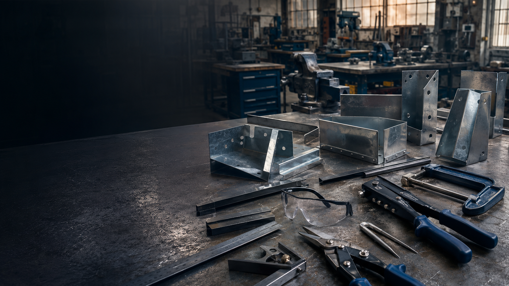

Sheet-metal foundation
Risk management, material selection, marking-out, cutting, forming, joining and finishing.
Stage 5 · Industrial Technology - Metal
Develop safe, accurate sheet-metal production through the toolbox and fishing rod holder projects—supported by theory, checks and evidence at every stage.

Course overview
Five two-week guided modules organise the strongest verified Metalwork content from the existing site. Practical work follows teacher-issued drawings, task notifications and demonstrations. No dimensions, Classroom codes or plan details are inferred.
Risk management, material selection, marking-out, cutting, forming, joining and finishing.
Student identity, immediate check feedback, written explanations, autosave and Print / Save PDF.
Use the drawings, task notification, demonstrations and submission directions issued for your class.
Guided pathway
Hazards, risk, hierarchy of controls, incident response and machine permission.
Open module →Properties, performance, toolbox and rod-holder briefs, drawings and production plans.
Open module →Datum edges, waste-side marking, workholding, cutting and forming sequence.
Open module →Joining decisions, trial fit, permission-based machining and protective finishes.
Open module →Conventional and CNC suitability, quality evidence and project evaluation.
Open module →Document both project contexts from brief and risk planning through production, testing and evaluation.
Open folio →Current NSW syllabus alignment
This is the current authority for the existing Year 9 course while schools plan for implementation of the new syllabus from 2028. This pathway provides opportunities to develop the outcomes below; the school program and assessment task determine the final mapping.
Assessment and evidence
Teacher-assessed evidence from the sheet-metal toolbox and fishing rod holder contexts.
Briefs, risk planning, material decisions, drawings, process evidence, quality checks and evaluation.
Module knowledge checks, written responses and the existing repository exam where directed by the teacher.
Resources
The current NSW syllabus and Metal focus-area authority for this Year 9 course.
Open NESA syllabus page ↗Planning resource only. The new syllabus is implemented from 2028 and has a different outcome code set.
Open future outcomes ↗Editable program, scope and sequence, rendered PDF and the shared Stage 5 alignment register.
Open Teacher Resources →The original ten core Metal theory units remain available for teacher reference.
Open Unit 1 source lesson →Printable handbook-aligned project and report notification.
Open Task 1 notification →Printable handbook-aligned project and report notification.
Open Task 2 notification →Course-specific questions, independent autosave and Print / Save PDF submission. Use only when directed by the teacher.
Open final exam →The teacher-issued drawing used for the Sheet-metal Toolbox project context.
Open larger plan ↗The teacher-issued drawing for the rod holder, stake and rotation tab.
Open larger plan ↗